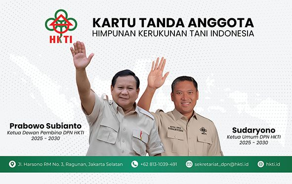

Himpunan Kerukunan Tani Indonesia — didirikan 27 April 1973 di Jakarta, hadir di Kabupaten Ponorogo untuk memperjuangkan kesejahteraan petani.
HKTI adalah organisasi yang menghimpun potensi petani di seluruh Indonesia. Struktur organisasi berjenjang dari Dewan Pimpinan Pusat (DPP), Dewan Pimpinan Daerah (DPD) provinsi, hingga Dewan Pimpinan Cabang (DPC) kabupaten/kota seperti HKTI Kabupaten Ponorogo, serta Pengurus Anak Cabang (PAC) di tingkat kecamatan.
Di Ponorogo, HKTI menjadi jembatan antara petani dengan pemerintah, dunia usaha, hingga lembaga keuangan — mendorong pertanian yang produktif dan berkelanjutan.
Meningkatkan pendapatan, kesejahteraan, harkat dan martabat insan tani, penduduk pedesaan, dan pelaku agribisnis lainnya.
Memberdayakan rukun tani komoditas usaha tani dan mempercepat pembangunan pertanian, serta menjadikan sektor pertanian sebagai basis pembangunan nasional.
Menghimpun segenap potensi insan tani Indonesia dan/atau Rukun Tani jenis komoditas usaha tani.
Alat penggerak dan pengarah perjuangan insan tani Indonesia.
Wahana menuju terwujudnya cita-cita nasional, Indonesia raya.
Dewan Pimpinan Nasional (DPN) HKTI menaungi kepengurusan hingga tingkat cabang, termasuk DPC Kabupaten Ponorogo.

Ketua Dewan Pembina DPN HKTI · 2025–2030. Presiden Republik Indonesia.
Ketua Umum DPN HKTI · 2025–2030. Wakil Menteri Pertanian RI.
Program kerja nasional yang menjadi acuan gerak HKTI di seluruh tingkatan, termasuk Ponorogo:
Temu Tani & Rakernas pertama HKTI (Bogor, 2025) menetapkan rekomendasi strategis, di antaranya:
Jl. Harsono RM No. 3, Ragunan, Jakarta Selatan
☎ +62 813-1039-491
✉ sekretariat_dpn@hkti.id
🌐 hkti.id
Kabupaten Ponorogo, Jawa Timur
☎ 0813-6072-5055
✉ mediacenterhkti@gmail.com
🕗 08.00–17.00 WIB